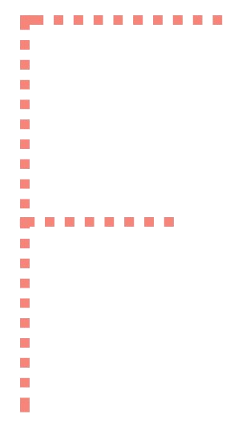
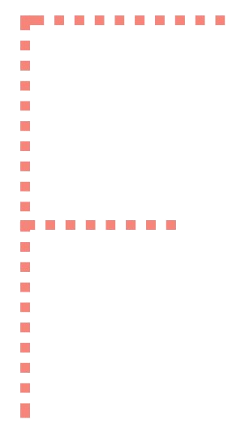
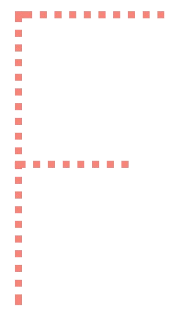

Lettering
Letter F
Rules-
1] Draw the line in the direction of the arrow on the trace of the letter.
2] To draw, click on the starting point and drag the cursor to end point .
 



1] Draw the line in the direction of the arrow on the trace of the letter.
2] To draw, click on the starting point and drag the cursor to end point .
